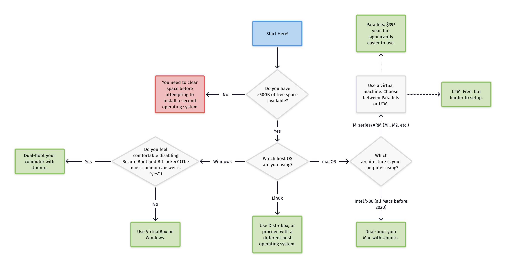

Getting Started¶
This page describes the recommended process of setting up a new Ubuntu system to work with the MIL repository and its dependencies. Ubuntu is an operating system (similar to OS X or Windows) that MIL (and other robotics labs) choose to use because of its familiarity with ROS.
System Requirements¶
Autonomous robotics is computationally expensive, especially when running simulations. Your VM or computer should have at least 4GB, although it will run much faster with 8GB of RAM or higher. You should have at least a dual-core system, but using more cores will allow compilation to run much faster.
If you are using a virtual machine, you can change the amount of RAM and the number of CPU cores allotted to the virtual machine by visiting the settings of your VM software.
Setting Up Ubuntu¶
Choosing an Install Method¶
You will need to install Ubuntu 20.04 LTS (disk image downloads linked below), the main operating system supported by ROS and our tools. Our tools are not setup to work on other operating systems, including other Linux distributions, macOS, and Windows.
To use Ubuntu in MIL, you have two options:
Use a virtual machine. A virtual machine uses your current operating system to virtually host another operating system (in this case, Ubuntu). This could cause your Ubuntu environment to run slow (in some cases, it might be unusable) and may cause you to experience issues with certain programs.
Dual-boot your computer. Dual booting will allocate a piece of your computer’s storage to a new operating system, which will be installed on your computer directly. This dual-booted solution will not run on top of your current operating system, but will instead run by directly using your computer’s resources.
Dual-booting your computer is highly recommended over using a virtual machine, as it allows your Ubuntu setup to tap directly into your computer’s resources. However, it’s totally your choice.
Warning
If you have an M-series (ARM) Mac computer, you will need to use a virtual machine as these systems are not able to have two operating systems installed at once. Intel-based Macs may also experience some issues with dual-booting Ubuntu.
The following diagram should give you insight into which method is best for you. Note that the diagram is only a recommendation. If you have installed Linux before, or know of a technical issue with your computer, you may know that a different method is best for you.

Installing Ubuntu¶
Here are the links to appropriate .iso (disk image) files. Note that you will
need to choose the correct disk image based on your computer’s architecture. You
do not always need to download these files - they are only needed for some installation
methods.
Architecture |
URL |
|---|---|
AMD64 (most Windows computers, Intel-based Mac computers) |
|
ARM64 (Apple Silicon Mac computers) |
The following subsections cover various installation methods. Please choose the installation option that best meets your use case. If you’re not sure what the best installation method is, please check the diagram above.
After you have the operating system downloaded, you may need to configure it. This includes setting your preferred language and keyboard layout, along with your username and password. Set these settings up to your liking, but note that having a shorter username may save you some typing in the long run.
Option 1: Dual-booting a Windows computer¶
A common choice for Windows computers is to dual-boot Linux onto them. This includes installing Linux right alongside your host operating system, Windows, on a separate partition on your computer’s hard drive. If you need access to a bootable USB drive containing Ubuntu Linux, feel free to stop by the lab.
If your computer uses BitLocker (also known as advanced drive encryption), you will need to disable this. To do this, you can usually search for “BitLocker” or “drive encryption” in your Windows search bar. A control panel or Settings application should open, at which point you can find the BitLocker setting and disable it.
If your computer uses Secure Boot, you will need to disable this. Secure Boot is a security feature in Windows that prevents the loading of operating systems other than Windows. While disabling Secure Boot will make your computer slightly less secure, unless you are a secret spy, you should be okay.
To disable secure boot, you will need to enter your computer’s UEFI settings. To do this, trigger an advanced restart of Windows. This can be done by holding shift before clicking restart. Then, click Troubleshoot > Advanced Options > UEFI Firmware Settings. Proceed into the security section of your BIOS settings, and disable Secure Boot.
Now, let’s partition your hard drive to allocate space for your new Ubuntu setup. Open Disk Manager by typing in “Disk Manager” in the Windows search bar. Right-click on your computer’s drive, and click Shrink Volume. Shrink your disk by 50000 MB, or 50 GB.
Now, insert the bootable USB drive into your computer, and once again, do an advanced restart by holding Shift and clicking Restart in your main Windows menu. In the advanced restart menu, click Use a device, and then choose the bootable USB drive. If you don’t see the USB drive, check to make sure that the USB is fully inserted, and try pulling it out and plugging it back in.
You should now see the Linux boot menu. Boot into Install Ubuntu or Ubuntu, not “Try Ubuntu without installing.” You can proceed with all default configuration options in the Ubuntu setup page, as you’ve already partitioned your disk.
Ubuntu will take some time to install. Once the installation process is complete, you should be able to access the Terminal using the nine dots in the bottom left corner to proceed with the rest of the installation.
Option 2: Using a virtual machine on Windows¶
Using a virtual machine on Windows will make installation quicker and easier, but will result in poorer performance and more strain on your system. If you’d like to install Ubuntu through a virtual machine:
Install VirtualBox. This virtualization software will manage your virtual machines.
Download the Ubuntu 20.04
.isofile linked above. This is a disk image, and contains a copy of Ubuntu. Wait for the download to complete.Click on New in VirtualBox. Fill out the first page of the form, if one appears.
When asked how much memory to allocate, you should move the marker to where the green meets the red. Typically in MIL, when your virtual machine is launched, it will be the only program you are using on your computer, and therefore, it’s recommended to give it as much memory and CPU as possible. The tick where the green meets the red is the highest amount that is safe for your operating system. If you cannot allocate more than 8192 MB, understand that your virtual machine may be a little slow, but that’s okay.
Create a new virtual hard disk. Using VDI (VirtualBox Disk Image) is fine. Make the disk dynamically allocated to save space on your computer. When asked how much space to start with, we recommend 50GB. Certainly no less than 30GB.
After you finish creating the new virtual machine, enter the settings of the virtual machine and adjust the “Processor” bar to where the green meets the red.
Visit the “Storage” settings of the virtual machine. Under “Controller IDE”, click the CD icon next to “Optical Drive” and click “Choose a disk file…” Navigate to the
.isofile you downloaded earlier, and select it.Click “OK” to save your settings.
Click on “Start” near the top of your virtual machine details. This will launch your virtual machine!
After some time, you should see the Linux boot menu. Boot into Install Ubuntu or Ubuntu, not “Try Ubuntu without installing.” You can proceed with all default configuration options in the Ubuntu setup page, as you’ve already partitioned your disk.
Ubuntu will take some time to install. Once the installation process is complete, you should be able to access the Terminal using the nine dots in the bottom left corner to proceed with the rest of the installation.
Option 3: Using Parallels on macOS¶
Parallels Desktop is well-known as the best virtual machine manager for macOS. Installing new virtual machines is quick, performance is stellar, and the application comes bundled with a suite of tools to make sharing resources between the virtual machine and macOS painless. However, Parallels does cost $39.99/year for students.
Purchase and download Parallels Desktop, linked above. If you use Homebrew, you can install the Parallels with
brew install parallels --cask.Do not click “Install Ubuntu Linux” - this will install Ubuntu 22.04, not Ubuntu 20.04! Instead, download the appropriate
.isofile linked above. Macs using an M-series processor should install the ARM64 disk image, not the AMD64.Choose “Install Windows or another OS from a DVD or image file.” Select the
.isofile that you downloaded previously and start up your virtual machine.You can name your VM whatever you’d like (maybe something related to MIL?). Click on “Configure…” and choose any options in the “Options” tab that you’d like. In the “Hardware” tab, use the highest number of processors and highest amount of memory recommended for your computer.
Click “Continue” - this will launch the virtual machine and begin the installation process.
After some time, you should see the Linux boot menu. Boot into Install Ubuntu or Ubuntu, not “Try Ubuntu without installing.” You can proceed with all default configuration options in the Ubuntu setup page, as you’ve already partitioned your disk.
Ubuntu will take some time to install. Once the installation process is complete, you should be able to access the Terminal using the nine dots in the bottom left corner to proceed with the rest of the installation.
Option 4: Using UTM on macOS¶
UTM is a popular open-source virtualization software for macOS. It is free, but will provide less performance and support between your host Mac and the VM.
Download UTM, linked above. If you use Homebrew, you can install UTM with
brew install utm --cask.Download the appropriate
.isofile for your computer, linked above. Macs using an M-series processor should install the ARM64 disk image, not the AMD64.Click the “+” button to create a new virtual machine, and choose “Virtualize.” Next, choose “Linux.”
Under “Boot ISO Image”, choose the disk image you downloaded earlier.
Allocate half of your computer’s memory to your VM. For example, if you have a 16GB computer, then allocate 8GB to the VM. Allocate half of your computer’s CPU cores. For example, if you use a quad-core computer, then allocate two cores to the VM. Enable hardware acceleration with OpenGL.
Allocate 50GB of space to your VM. If you don’t have too much space left on your computer, you can allocate less, but do not go below 30GB. If you’d like to clean up space on your computer, click the Apple logo in the top left corner of your Mac, choose “About This Mac”, head to “Storage”, and then click “Manage.”
Click “Save.” Before starting the VM, go into the control panel of the VM using the options button in the top right. In “Display,” enable “Retina Mode.”
Now, click the play button on your VM to turn the VM on!
After some time, you should see the Linux boot menu. Boot into Install Ubuntu or Ubuntu, not “Try Ubuntu without installing.” You can proceed with all default configuration options in the Ubuntu setup page, as you’ve already partitioned your disk.
Ubuntu will take some time to install. Once the installation process is complete, you should be able to access the Terminal using the nine dots in the bottom left corner to proceed with the rest of the installation.
Option 5: Dual-boot a macOS computer¶
While dual-booting macOS is not a common option of installation, for those with lots of space and recently built computers, it can still be a viable option. You may gain more performance from a dual-boot system versus a virtual machine.
Dual-booting is only an option for members with an Intel-based Mac. M-series Macs are not able to dual-boot.
To start, you’ll need to partition your hard drive. Open Disk Utility and choose “View > Show All Devices.” Select the highest-level drive, and choose “Partition.”
Use the “+” button to create a new partition. Click “Add Partition.” Name it whatever you’d like (maybe something related to MIL or Ubuntu?), and set the format to “MS-DOS (FAT32).” Allocate 50GB. If you don’t have enough space to allocate 50GB, 30GB should suffice, but don’t go below 30GB. Click “Apply” to create a partition.
Insert the bootable USB drive into your computer and restart your computer. Upon restart, hold the Option key until you see the boot options. Select the bootable USB drive.
After some time, you should see the Linux boot menu. Boot into Install Ubuntu or Ubuntu, not “Try Ubuntu without installing.” You can proceed with all default configuration options in the Ubuntu setup page, as you’ve already partitioned your disk.
Ubuntu will take some time to install. Once the installation process is complete, you should be able to access the Terminal using the nine dots in the bottom left corner to proceed with the rest of the installation.
Option 6: Use Distrobox on another Linux distribution¶
If you’re already using another Linux distribution regularly, you can use Distrobox to virtualize Ubuntu on this other distribution. This program is similar to Docker or a virtual machine software, but is more lightweight and less computationally heavy.
Install Distrobox. The installation method will vary based on your host operating system.
Create a new Distrobox container using
distrobox create --name mil --image ubuntu:focal --home ~/mil-home.Enter the container using
distrobox enter --name mil. You can proceed with the MIL installation script from here.
Updating packages¶
First, we will refresh the list of packages available for your computer. You
will install packages on Ubuntu using the apt package manager. You may also
see this written as apt-get; the two commands are very similar and usually
achieve the same purpose.
(To access the Terminal on Ubuntu, click the 9 dots in the bottom left corner and find the Terminal app. You can later install a different terminal emulator, if you’d like.)
$ sudo apt update
$ sudo apt upgrade
Note
The $ shown before the commands above indicates that those commands are meant
to be run in your computer’s shell. Do not type these dollar signs; only type
what comes after them.
You may also see >>> in code examples on pages you visit later. This indicates
that those code examples are meant to be run in the Python REPL. Furthermore,
... is used to represent a Python command that is meant to be indented before
it’s ran in the REPL.
Install git¶
To contribute changes, you will need to have git installed. This program will be used to track and upload any changes that you make to the repository.
$ sudo apt install git
Cloning the repository¶
You need to clone (download) a copy of the repository onto your computer so you can make changes.
First clone the upstream (MIL’s fork) version of the repo. It is recommended
that you first create a catkin workspace and clone it into the src or that
workspace.
$ mkdir -p ~/catkin_ws/src && cd ~/catkin_ws/src
Then, clone the repository (the --recurse-submodules is essential, as that is
what pulls the submodules, -j8 is a speed optimization that downloads up to 8
submodules at a time). Cloning the repository allows you to have a local copy
of the code on your computer.
$ git clone --recurse-submodules -j8 https://github.com/uf-mil/mil.git
Navigate to the root of the repository now. If you have followed the instructions exactly, you can get there through:
$ cd ~/catkin_ws/src/mil
Run the setup scripts¶
If you are running Ubuntu, and prefer to run code directly on your “host” operating system without using Docker, you can run the following scripts from the root of the repository.
If you’re wondering what these scripts do, they install all of the tools needed
for you to work in MIL (git, ROS, Python dependencies, etc.). Feel free
to open up the file in an editor if you’re more curious.
$ ./scripts/install.sh
$ exec bash # or exec zsh if you have set up zsh
Exit the terminal and enter it again.
To build our tools, we use a tool that ROS provides us named catkin_make. This
searches through all of our packages and compiles them together. You can use an
alias, cm to call catkin_make quickly, from wherever you are in the MIL directory.
$ cm
If something goes wrong, try the suggestions in Getting Help. It’s common for the build to fail if your system was unable to find enough resources to build the project. If you are using a VM, you may want to allocate more cores or RAM to the instance.
Configuring Git¶
If you have not configured Git to use your name/email on your new Ubuntu setup, you can use the script below to set up your Git configuration! It will help you register your name and email with Git and authenticate so that you can push to the repository.
$ ./scripts/store_git.sh
Viewing simulation¶
Now that you’ve built the repository, check to make sure that the simulation works
on your computer. To do this, we will use a tool called roslaunch, which launches
up a simulation of our submarine.
For this, you will need multiple terminal windows! To create a new window in the
default terminal, use Ctrl + Shift + t.
In window one, write:
$ roslaunch subjugator_launch gazebo.launch
In window two, write:
$ gazebogui
The first command launches the necessary subsystems for Gazebo, while the second command launches the Gazebo GUI - aka, the thing you will actually interact with! If all goes according to plan, you should see our robot in its own little world!
Installing developer tools¶
After you have verified that your Git setup is working appopriately, take a look at installing some developer tools on the Developer Tools page.
You are highly recommended to install pre-commit, but installing Zsh or
a specific editor is entirely up to you. If you choose not to install pre-commit,
the chance of your changes failing in CI is higher.
What’s next?¶
If the catkin_make didn’t fail on your computer, you’re all good to go!
Congratulations, and welcome to MIL!
The next step is to get assigned a task and to dive in. You should have the setup to do so now!
Note
In order to contribute code, you need to be in the uf-mil GitHub organization. First create a GitHub account if you do not have one, then ask someone in MIL / on Slack to invite you.